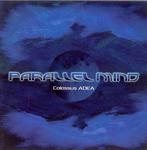

| Artist: | Parallel Mind |
| Title: | Colossus ADEA |
| Label: | Unicorn Records UNCR-5018 |
| Length(s): | 60 minutes |
| Year(s) of release: | 2005 |
| Month of review: | [10/2005] |
| 1) | Chromanic | 14.18 |
| 2) | Opposite Of Know | 8.13 |
| 3) | Colossus ADEA - The Guardian | 4.33 |
| 4) | Colossus ADEA - Into The Depths | 4.59 |
| 5) | Colossus ADEA - Underwater Cities | 4.52 |
| 6) | Colossus ADEA - Resurface Earth | 4.03 |
| 7) | Casa De Jig | 7.43 |
| 8) | Beginning's End | 12.45 |
Opener Chromanic is based on a frivolous piano hopping around with the organ making tiny pushes into its sides at times. The other instruments play a supporting role in this one. Initially there is a bit of an avant prog feel about this track, but the strength of the instruments washes this away as it progresses.
Opposite Of Know opens almost as an etude, soon changing into something more up-tempo, almost funky in its use of piano and bass. The organ maintains its pushing role.
Into The Depths introduces female chanting, bringing with it a musical shift into something almost tranquil, featuring near Richard Clayderman piano moves. Against the backdrop of the other tracks on this album this track is something of an oddity I could have easily lived without. The somewhat mysterious end of this track can't fully nullify all that it's caused.
Underwater Cities is something of a flowing piano melody, in which the piano, later taken over by organ, plays such an important role musically that the track falls outside the powertrio formula.
Casa De Jig introduces some salsa elements on both piano and trumpet. Unfortunately this only happens halfway through the track, thus only further accenting the lack of spice in the early parts of the number. This salsa opening seems to be the signal for a barage of folk influences, including Japanese and Irish bits and pieces.